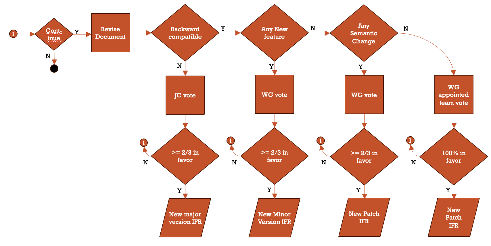

Processes¶
Organizational Processes¶
Organization Overview¶
The NTCIP effort is a joint effort of three Standards Development Organizations (SDOs): the American Association of State Highway and Transportation Officials (AASHTO), the Institute of Transportation Engineers (ITE), and the National Electrical Manufacturers Association (NEMA). The overall effort is managed by an NTCIP Coordinator and overseen by the Joint Committee on the NTCIP (JC), which consists of 6 representatives from each SDO. The JC establishes working groups (WGs) to develop standards and other documents per defined processes. The JC can also establish long-term advisory groups (AGs) and short-term ad-hoc groups (AHGs) to provide advice on specific topics.
Participation in the NTCIP effort is open to anyone who has a vested interest in Intelligent Transportation Systems, including infrastructure operators/owners, producers (e.g., device manufactures and central system providers), and general interest users (e.g., consultants, academics, and others). The JC and each of its groups (e.g., WG, AG, AHG) is led by a chair that is responsible for calling meetings and leading discussions. Other key participants include document editors and liaisons.
The responsibilities for each of these entities are described in the following clauses.
Standards Development Organizations¶
| Parameter | Value |
|---|---|
| Effective Date: | September 30, 2026 |
| Approved By: | NTCIP Joint Committee |
| Policy Contact: | NTCIP Coordinator |
| Supersedes: | N/A |
| Last Reviewed/Updated: | September 30, 2026 |
| Applies To: | NTCIP Joint Committee and Working Groups |
| History: | None |
| Related Policies: | None |
Assignment¶
SDO membership within the NTCIP is predicated upon joint agreement among all participating SDOs.
Responsibilities¶
Each of the three SDO members of the NTCIP effort is responsible for:
- Establishing the necessary Memorandum of Understandings among the SDOs
- Establishment of Joint Committees and scope
- Appointing members to the Joint Committees and coordinating with other SDOs to ensure balance
- Appointing the NTCIP Coordinator
- Coordination of technical work among SDOs and among Joint Committees
- Consideration of appeals
Termination¶
Rules for an SDO to terminate its participation within the NTCIP are defined in the joint agreement among participating SDOs.
NTCIP Coordinator¶
| Parameter | Value |
|---|---|
| Effective Date: | September 30, 2026 |
| Approved By: | NTCIP Joint Committee |
| Policy Contact: | NTCIP Coordinator |
| Supersedes: | N/A |
| Last Reviewed/Updated: | September 30, 2026 |
| Applies To: | NTCIP Joint Committee and Working Groups |
| History: | None |
| Related Policies: | None |
Assignment¶
The NTCIP Coordinator is appointed through mutual agreement among the SDOs.
Responsibilities¶
The NTCIP Coordinator is responsible for:
- Managing projects
- Advertising work and managing consultants, if needed
- Ensuring continued progress of work and updates to status on websites
- Ensuring projects follow defined processes and procedures
- Managing comments and responses
- Announcing meetings with agendas
- Ensuring that documents are processed in a timely manner once submitted to the SDOs for UCD, ballot, or publication
- Maintain membership roles for each NTCIP group ensuring that members are fulfilling the requirements of membership
- Maintaining a list of observing members who would like to be considered for voting membership
- Notifying SDOs when voting members miss two consecutive meetings so that warnings can be issued
- Notifying SDOs when voting members are transitioned to observer status due to inactivity
- Setting up meetings
- Assisting JC chair as needed
- Maintaining all necessary records for projects
- Maintaining a written record of all decisions made at JC and WG meetings
Termination¶
The NTCIP Coordinator can be replaced at any time through mutual agreement among the SDOs.
Joint Committee on the NTCIP¶
| Parameter | Value |
|---|---|
| Effective Date: | September 30, 2026 |
| Approved By: | NTCIP Joint Committee |
| Policy Contact: | NTCIP Coordinator |
| Supersedes: | N/A |
| Last Reviewed/Updated: | September 30, 2026 |
| Applies To: | NTCIP Joint Committee and Working Groups |
| History: | None |
| Related Policies: | None |
Establishment¶
The Joint Committee on the NTCIP (NTCIP JC) is established by the Memorandum of Understanding among the SDOs.
Membership¶
The NTCIP JC is composed of the following voting membership interest categories:
- AASHTO (user)
- ITE (general interest)
- NEMA (producer)
Each SDO is represented by six (6) voting members, for a total of eighteen (18) voting members.
NTCIP JC meetings are typically open meetings and can be attended by any interested party. These parties are encouraged to register with the NTCIP Coordinator as observers or liaisons to participate in discussions and receive meeting announcements.
Responsibilities¶
The JC is responsible for:
- Approving the policies, processes and procedures of the NTCIP
- Approving new projects with appropriate details
- Approving the formation of new groups (e.g., WGs, AGs, AHGs) under the NTCIP JC
- Approving recommendations from established groups, as appropriate
Quorum¶
A quorum is required for any formal action by the NTCIP JC. Quorum is established by a ⅔rds majority of the current voting membership with at least two (2) members from each of the three (3) membership categories (AASHTO, ITE, and NEMA). Alternates count towards quorum.
Note
When a quorum is not present, the NTCIP JC can proceed with its meeting, but cannot take any formal action unless additional voting members arrive.
Voting¶
In general, the NTCIP JC operates on a consensus basis (i.e., reasonable attempts are made to resolve all sustained objections). However, when needed to resolve conflicts and when required by adopted procedures, the NTCIP JC will undertake formal votes. Unless otherwise stated in detailed processes, decisions by the JC are made by simple majority of those voting (i.e., more than half of the votes cast) when a quorum is available.
Voting by correspondence (i.e., a stated vote on a specific question provided in writing in advance of a meeting) or through the voting member's designated alternate is allowed, but proxies (i.e., a voting member allowing another voting member to cast their vote or a general position on an issue) is not allowed. Neither absences nor abstentions are considered in voting results, unless otherwise stated in detailed processes.
Electronic ballots (i.e., all members vote on a specific question via electronic means) are allowed by the NTCIP JC as long as the number of responses received represents a quorum. Mixed ballots (i.e., some members vote electronically and some members vote in person) are not allowed.
Groups¶
| Parameter | Value |
|---|---|
| Effective Date: | September 30, 2026 |
| Approved By: | NTCIP Joint Committee |
| Policy Contact: | NTCIP Coordinator |
| Supersedes: | N/A |
| Last Reviewed/Updated: | September 30, 2026 |
| Applies To: | NTCIP Joint Committee and Working Groups |
| History: | None |
| Related Policies: | None |
Types of Groups¶
Question
The current NTCIP structure does not seem to allow for groups other than WGs. The recent task force demonstrated the need for such a group. The following is based on the ISO structure. Is it appropriate?
Within the NTCIP effort, most work is performed within groups. The NTCIP JC can establish three types of groups:
- Working Groups are formed for the task of developing one or more documents (e.g., standards, informational reports) to be published by the NTCIP.
- Advisory Groups are long-term groups formed to provide guidance and recommendations to the JC on issues that continually evolve (e.g., planning).
- Ad-hoc Groups are short-term groups formed to provide guidance and recommendations to the JC on specific issues that arise.
Note
Advisory and ad-hoc groups provide advice to the NTCIP JC. This advice is often delivered in the form of an internal written report. Development of documents for publication are required to be prepared by working groups to ensure that they are properly vetted by interested parties.
Establishment of groups¶
Groups are established by a simple majority vote of the NTCIP JC. The NTCIP Coordinator is responsible for publicizing the action to promote membership within the group whenever:
- The group is established,
- Membership falls below defined thresholds, and
- The group is reactivated after being dormant for a period of time.
Working Group Membership¶
Each working group is composed of the following voting membership categories:
- NEMA (producer)
- AASHTO (user)
- ITE (general interest)
Each SDO shall be assigned the same number of voting positions within the working group; the number of voting positions within the working group shall be determined by the NTCIP JC.
NTCIP group meetings shall be open meetings that can be attended by any interested party. These parties are encouraged to register with the NTCIP Coordinator as observers or liaisons to participate in discussions and receive meeting announcements.
Membership in Advisory and Ad-hoc Groups¶
Each advisory and ad-hoc group shall be composed of voting positions as determined by the NTCIP JC.
Note
While advisory and ad-hoc groups are often designed to have balanced membership, this is not a hard requirement because their scope is limited to the development of internal documents that are reviewed by the NTCIP JC, which is already balanced.
Responsibilities¶
Each group is responsible for its scope as defined by the NTCIP JC. When there is active work within the group, the group is responsible for reporting to the NTCIP JC regarding its current schedule and progress made as well as reporting any issues that have arisen and making formal recommendations for any NTCIP JC action that needs to be taken.
Quorum¶
Question
For review
A quorum is required for any formal action by a group. To establish a quorum, a group will have:
- Greater than 50% of the current voting membership
Representation from a minimum of two members from each membership category applicable to the group
A group that does not have, on its roster, at least two members from each applicable interest category will be considered inactive until the limitation is resolved.
Note
When a quorum is not present, the group can proceed with its meeting, but cannot take any formal action unless additional voting members arrive.
Voting¶
Each group generally operates by consensus. Specifically, issues about the text of a draft standard are discussed, as necessary. If there are no sustained objections to the revised text, the discussion can move to the next topic without any formal vote. This promotes speedy development; nonetheless, a member can use Robert's Rules to ask for a vote on the issue to document the level of consensus, if they wish. While most discussions are by consensus, key decisions defined in the development process require formal votes to unambiguously document the level of consensus achieved prior to moving the document to the next stage.
Within groups, votes are by simple majority, unless otherwise specified in detailed processes.
Terminating groups¶
At any time, the NTCIP JC can suspend or terminate a group by a simple majority vote.
JC Chair¶
| Parameter | Value |
|---|---|
| Effective Date: | September 30, 2026 |
| Approved By: | NTCIP Joint Committee |
| Policy Contact: | NTCIP Coordinator |
| Supersedes: | N/A |
| Last Reviewed/Updated: | September 30, 2026 |
| Applies To: | NTCIP Joint Committee and Working Groups |
| History: | None |
| Related Policies: | None |
Assignment¶
Discussion
From the MOU (although we have never operated like this): The committee shall designate a chair and vice-chair which shall be from different organizations. The chair shall have a term limit of 3 consecutive years. After the 3-year term the vice-chair shall become chair, and a new vice chair shall be designated from the remaining organization that didn’t have a leadership role during the previous term.
The JC Chair shall be a voting member of the NTCIP JC and is appointed by the SDOs. It is the responsibility of the SDOs to coordinate among each other in this selection.
???
Responsibilities¶
In addition to the responsibilities of a voting member of the NTCIP JC, the JC chair is responsible for:
- Acting on behalf of the full NTCIP effort (not the chair's employer)
- Guiding the NTCIP Coordinator
- Ensuring projects are moving forwards
- Calling JC meetings
- Presiding over NTCIP JC meetings
- Ensuring that important topics are included in the agenda
- Pursuing goal of establishing consensus on important issues
- Ensuring that all concerns are properly considered by the committee in a balanced manner
- Ensuring that all committee decisions are properly formulated and captured
- Appointing chairs of each established group
- Ensuring established processes are followed
- Ensuring the establishment of a long-term plan for the NTCIP effort
Termination¶
The NTCIP JC chair can resign at any time. The NTCIP chair can be replaced at the end of the three year term or by a ⅔rds vote of the NTCIP JC voting membership.
Question
Should a change in employment interest category cause a change in the JC chair?
NTCIP JC Members¶
| Parameter | Value |
|---|---|
| Effective Date: | September 30, 2026 |
| Approved By: | NTCIP Joint Committee |
| Policy Contact: | NTCIP Coordinator |
| Supersedes: | N/A |
| Last Reviewed/Updated: | September 30, 2026 |
| Applies To: | NTCIP Joint Committee and Working Groups |
| History: | None |
| Related Policies: | None |
Assignment¶
Voting members of the JC are appointed by the SDOs with six members appointed by each of the three SDOs, for a total of 18 voting member positions. Membership within the NTCIP JC is assigned to an individual, but that individual may designate a single alternate member from the same organization to represent the assigned member's position if the assigned member is unavailable. It is the responsibility of the SDOs to coordinate among each other to ensure balance among these members, including that no single organization is represented by more than a single voting membership.
Question
Is there a term duration or term limits?
Participation¶
NTCIP JC members are responsible for participating in meetings. SDOs are responsible for ensuring that their appointed NTCIP JC members participate in meetings and removing them otherwise. It is recommended that SDOs warn NTCIP JC members that their membership status is in jeopardy if they miss two consecutive meetings and to remove them if they miss three consecutive meetings.
Note
NTCIP JC members are appointed by the SDOs. It is the responsibility of the SDOs to ensure that their appointed NTCIP JC members participate in meetings and remove them otherwise. Failure of an SDO to ensure member participation results in a defacto dilution of the SDO vote.
Responsibilities¶
In addition to participating in meetings, NTCIP JC members are responsible for:
- Participating in discussions within the JC,
- Reviewing documents,
- Providing comments,
- Casting votes, and
- Informing the NTCIP Coordinator of any changes to their contact or employment information.
Alternates¶
A voting member of the NTCIP JC may designate an alternate member from the voting member's employer organization to represent and vote for the voting member if the assigned voting member is unavailable for a meeting. The alternate member shall count towards quorum and voting results. However, the voting member is not allowed to assign an alternate member for two consecutive meetings.
Example
Meeting 1: Voting member is present.
Meeting 2: Voting member assigns alternate.
Meeting 3: Voting member is present.
Meeting 4: Voting member assigns alternate.
Meeting 1: Voting member is present.
Meeting 2: Voting member assigns alternate.
Meeting 3: Voting member absent. (attendance warning should be issued, but no removal)
Meeting 4: Voting member is present.
Meeting 1: Voting member is present.
Meeting 2: Voting member assigns alternate.
Meeting 3: Voting member absent. (attendance warning should be issued, but no removal)
Meeting 4: Voting member assigns alternate.
Voting member should be removed at the end of Meeting 4
Meeting 1: Voting member is present.
Meeting 2: Voting member absent.
Meeting 3: Voting member assigns alternate. (attendance warning issued, but no removal)
Meeting 4: Voting member absent.
Voting member should be removed at the end of Meeting 4
Meeting 1: Voting member is present.
Meeting 2: Voting member assigns alternate.
Meeting 3: Voting member not allowed to assign alternate. (violates two consecutive meeting rule)
Termination¶
A member of the NTCIP JC can resign at any time. The voting membership of the NTCIP JC can revoke the voting membership of any member by a ⅔rds vote of all current voting members. Upon resignation or termination of any voting member, the associated SDO should take immediate steps to find a replacement voting member.
Question
Do we need to say anything about the following or is it up to each SDO to handle:
- Lapsing membership (e.g., due to inactivity)
- Reinstating membership
- change in employment interest category
Terminating JC Voting Membership¶
A member of the NTCIP JC can resign or be removed by the nominating SDO at any time.
NTCIP Group Members¶
| Parameter | Value |
|---|---|
| Effective Date: | September 30, 2026 |
| Approved By: | NTCIP Joint Committee |
| Policy Contact: | NTCIP Coordinator |
| Supersedes: | N/A |
| Last Reviewed/Updated: | September 30, 2026 |
| Applies To: | NTCIP Joint Committee and Working Groups |
| History: | None |
| Related Policies: | None |
Member Assignment¶
For JC Discussion
Voting membership on the WGs has become an issue. They are incompatible with the proposed IFR approval process because ANSI requires safety-related standards to have no more than ⅓ of the vote reserved for any interest category. We currently only divide between public and private sector - at best achieving 50% balance. In addition, concerns have been raised about the opaque nature in which members are appointed and there have been significant problems in achieving quorum at times, which delays the work. The following represents the consensus of the WG but needs review by the JC.
The voting positions within a group are established by the NTCIP JC.
Membership within each group is assigned to an individual. The initial assignment of voting members to fill these positions shall be performed jointly by the NTCIP JC chair and the group's co-chairs. Subsequent assignments shall be performed by the group's co-chairs. In all cases, the assignments shall:
- Ensure the members fulfill the requirements for the position, including that the proposed member:
- Represents the interest category associated with the voting position (e.g., only public-sector employees can be assigned to an AASHTO position)
- Does not represent the same organization as another voting member
- Does not have a conflict of interest
- Prefer members who:
- Have indicated a willingness to serve
- Have demonstrated a record of meeting attendance
- Represent significant perspectives of the ITS industry not otherwise represented in the voting membership (e.g., if this limitation was not otherwise listed, the perspectives of a single project could be over-represented by appointing representative from its associated state agencies, local agencies, consultants, manufacturers, etc.)
Note
This information can be provided by the NTCIP Coordinator to the Group Chair.
Any entity can participate at any meeting as an observer. Liaisons from other organizations shall be recognized when appointed by other organizations.
Participation¶
Voting members of a group are responsible for participating in the group's meetings. Their membership shall automatically lapse to observer status if they miss three out of four consecutive meetings.
Note
A warning from the NTCIP Coordinator is a courtesy and does not absolve the voting member from the responsibility to attend meetings. The voting membership lapses even if the NTCIP Coordinator fails to issue the warning.
Note
Attendance, or lack of attendance, at a properly publicized meeting that is immediately cancelled due to lack of quorum counts towards the voting member's attendance.
Note
The change in status occurs at the end of the meeting; allowing a member to enter a meeting late without penalty.
Responsibilities¶
In addition to participating in meetings, NTCIP JC members are responsible for:
- Participating in discussions within the group,
- Reviewing documents,
- Providing comments,
- Casting votes, and
- Informing the NTCIP Coordinator of any changes to their contact or employment information.
Group Alternates¶
A voting member of an NTCIP group may designate an alternate member from the voting member's employer to represent and vote for the voting member if the assigned voting member is unavailable for a meeting. The alternate member shall count towards quorum and voting results. However, the voting member is not allowed to assign an alternate member for two consecutive meetings. However, the voting member's attendance does not count towards the voting member's attendance.
Example
Meeting 1: Voting member is present.
Meeting 2: Voting member assigns alternate.
Meeting 3: Voting member assigns alternate. (attendance warning should be issued, but no removal)
Meeting 4: Voting member assigns alternate.
Voting member automatically removed at the end of Meeting 4
Meeting 1: Voting member is present.
Meeting 2: Voting member assigns alternate.
Meeting 3: Voting member assigns alternate. (attendance warning should be issued, but no removal)
Meeting 4: Voting member assigns alternate. Voting member then shows up late. (Counts as attending meeting)
Voting member stays active.
Meeting 1: Voting member is present.
Meeting 2: Voting member assigns alternate.
Meeting 3: Voting member assigns alternate. (attendance warning should be issued, but no removal)
Meeting 4: Voting member is present.
Meeting 5: Voting member assigns alternate.
Voting member automatically removed at the end of Meeting 4
Terminating Group Membership¶
A (organizational) member of an NTCIP group can resign at any time. A member who misses five consecutive meetings can be removed from membership roles (but can be re-instated by simply attending a meeting).
Note
Removing members from roles is primarily a task to ensure that a group is still viable.
Group Co-Chairs¶
| Parameter | Value |
|---|---|
| Effective Date: | September 30, 2026 |
| Approved By: | NTCIP Joint Committee |
| Policy Contact: | NTCIP Coordinator |
| Supersedes: | N/A |
| Last Reviewed/Updated: | September 30, 2026 |
| Applies To: | NTCIP Joint Committee and Working Groups |
| History: | None |
| Related Policies: | None |
Assignment¶
Question
If we shift WG membership to one of three categories, should we do the same for chairs? NOTE: ANSI balance requires nor more than a third from any one category for safety standards.
The NTCIP JC chair appoints one private-sector and one public-sector co-chair to each NTCIP group. The dual-chair structure is designed to improve the balance of discussions while also allowing meetings to be conducted when one chair might have a conflict. The co-chairs are responsible for:
Responsibilities¶
- Acting on behalf of the full NTCIP effort (not the co-chair's employer)
- Reporting to the NTCIP JC
- Ensuring projects are moving forwards
- Calling group meetings
- Presiding over group meetings
- Ensuring that important topics are included in the agenda
- Pursuing goal of establishing consensus on important issues
- Ensuring that all concerns are properly considered by the group in a balanced manner
- Ensuring that all group decisions are properly formulated and captured
- Ensuring established processes are followed
- Ensuring the development of a long-term plan for the group to be recommended to the JC
Termination¶
A chair of an NTCIP group can resign at any time. The NTCIP JC Chair can remove the chair from the role at any time.
Editors¶
| Parameter | Value |
|---|---|
| Effective Date: | September 30, 2026 |
| Approved By: | NTCIP Joint Committee |
| Policy Contact: | NTCIP Coordinator |
| Supersedes: | N/A |
| Last Reviewed/Updated: | September 30, 2026 |
| Applies To: | NTCIP Joint Committee and Working Groups |
| History: | None |
| Related Policies: | None |
Assignment¶
Every NTCIP document (draft or published) is assigned a primary editor by the NTCIP Coordinator.
Responsibilities¶
The editor is responsible for consolidating all of the comments received to date into a coherent document that conforms with the NTCIP format as defined in NTCIP 8002. The editor is also responsible for the following, per the processes and procedures defined in this document:
- Managing written comments received,
- Formulating draft responses,
- Facilitating discussions on the comments and draft responses,
- Submitting the final comments with resolutions to the NTCIP Coordinator, and
- Developing any required standards development report package.
Termination¶
The NTCIP Coordinator can remove the editor at any time.
Question
Can/should the editor be a voting member?
Maintainer¶
| Parameter | Value |
|---|---|
| Effective Date: | September 30, 2026 |
| Approved By: | NTCIP Joint Committee |
| Policy Contact: | NTCIP Coordinator |
| Supersedes: | N/A |
| Last Reviewed/Updated: | September 30, 2026 |
| Applies To: | NTCIP Joint Committee and Working Groups |
| History: | None |
| Related Policies: | None |
Assignment¶
For online development projects, the NTCIP Coordinator must assign a maintainer. The maintainer can be the editor.
Responsibilities¶
The maintainer is responsible for the tasks defined for this role in NTCIP 8008. The maintainer is responsible for the management of the online environment and does not need to necessarily be a subject matter expert in relation to the standard; rather the maintainer must be familiar with GitHub operations to ensure that the online environment remains useful, that those submitting comments receive timely acknowledgement, and must coordinate with the editor to ensure subject matter issues are resolved.
Termination¶
The NTCIP Coordinator can remove the maintainer at any time.
Question
Can/should the maintainer be a voting member?
| Parameter | Value |
|---|---|
| Effective Date: | September 30, 2026 |
| Approved By: | NTCIP Joint Committee |
| Policy Contact: | NTCIP Coordinator |
| Supersedes: | N/A |
| Last Reviewed/Updated: | September 30, 2026 |
| Applies To: | NTCIP Joint Committee and Working Groups |
| History: | None |
| Related Policies: | None |
Liaison¶
Liaisons are members of a group that have been formally designated to be responsible for reporting to and/or reporting from an external organization that is relevant to the group's discussion. The formal designation often facilitates sharing information between groups.
| Parameter | Value |
|---|---|
| Effective Date: | September 30, 2026 |
| Approved By: | NTCIP Joint Committee |
| Policy Contact: | NTCIP Coordinator |
| Supersedes: | N/A |
| Last Reviewed/Updated: | September 30, 2026 |
| Applies To: | NTCIP Joint Committee and Working Groups |
| History: | None |
| Related Policies: | None |
Observer¶
Question
It seems to me that this does not formally exist at present, but I think this is the practice, yes?
NTCIP JC meetings are open to any party with a vested interest in ITS that contacts the NTCIP Coordinator in advance. The NTCIP Coordinator will maintain a list of observers and has the discretion to remove observers from meetings for cause or to remove observers from the list if they have not participated in recent meetings. Observers have no formal status or rights at meetings and are considered guests at the meetings.
NTCIP Development Process¶
| Parameter | Value |
|---|---|
| Effective Date: | September 30, 2017 |
| Approved By: | NTCIP Joint Committee |
| Policy Contact: | NTCIP Coordinator |
| Supersedes: | N/A |
| Last Reviewed/Updated: | September 30, 2026 |
| Applies To: | NTCIP Joint Committee and Working Groups |
| History: | None |
| Related Policies: | None |
Process Statement¶
Overview¶
In concept, the process of creating a standard is straightforward: a specification undergoes a period of development and several iterations of review and revision, is approved (or adopted) as a standard by the appropriate body, and is published. In practice, the process is more complicated, due to:
- the difficulty of creating specifications of high technical quality;
- the need to consider the interests of all of the affected parties;
- the importance of establishing widespread community consensus; and
- the difficulty of evaluating the utility of a particular specification.
Goals¶
The goals of the NTCIP Standards Process are:
- technical excellence;
- clear, concise, and easily understood documentation;
- openness and fairness; and
- meeting needs within the ITS community.
The goals of technical excellence and the need to allow all interested parties to comment on work items require significant time and effort. On the other hand, today's rapid development of technology demands the timely development of standards. The NTCIP standards process is intended to balance these conflicting goals. The process is believed to be as short and simple as possible without unduly sacrificing technical excellence or openness and fairness.
From its inception, the NTCIP project has been, and is expected to remain, an evolving family of standards whose members regularly factor new requirements and technology into its design and implementation. Users of NTCIP standards and providers of the equipment, software, and services that support it should anticipate and embrace this evolution as a major tenet of NTCIP philosophy.
The NTCIP standards development process is shown in Figure 2. It includes steps of increasing levels of review and endorsement. Within each level, there are also several steps related to specific activities that take place.
Document Approval Processes¶
Overview¶
The NTCIP has three approval processes resulting in different levels of standardization as presented below. The three processes mainly differ in the number of iterations that are required and who approves the final document, whereas the Steps required within the process are consistent among the processes.
NTCIP Interim for Field Release (IFR)¶
The IFR process does not include a distinct user comment stage; instead, it requires the use of the online development process to gather comments during drafting.
- Assign a standards work item to a WG with an IFR target
- If new major version
- WG drafts document
- WG reviews document
- WG approves document as pIFR
- JC reviews document
- JC approves document as IFR
- If minor version
- WG revises document
- WG reviews document
- WG approves document as IFR
- JC can rescind minor version
- If patch
- WG Editorial Team revises document
- WG reviews document
- WG Editorial Team approves document as IFR
- WG can rescind patch
- SDO Publishes as IFR
Question
We need to clarify what constitutes a "semantic change", a "new feature", and "backwards compatible" for the following diagram
Question
Replace the following with a GraphViz figure

NTCIP JC Recommended Standard (JRS)¶
- Assign a standards work item to a WG with a JRS target
- WG drafts document
- WG approves document as pUCD
- JC reviews document
- JC approves document as UCD
- SDOs distribute UCD
- WG collects and resolves comments
- WG revises document
- WG approves document as pJRS
- JC reviews document
- JC approves document as JRS
- SDO publishes as JRS
NTCIP Standard¶
- Assign a standards work item to a WG with a full standard target
- WG drafts document
- WG approves document as pUCD
- JC reviews document
- JC approves document as UCD
- SDOs distribute UCD
- WG collects and resolves comments
- WG drafts document
- WG approves document as pJRS
- JC reviews document
- JC approves document as JRS
- SDO publishes as JRS
- SDO distributes for review
- SDOs approve as full standard
- SDO publishes as full standard
Question
Replace the following with a GraphViz figure

Process Steps¶
JC Assigns a Standards Work Item to a WG¶
A standards activity begins with a proposal submitted to the NTCIP JC for consideration (see Procedure 5.2 NTCIP JC Proposals). Typically, a proposal comes from an existing WG but it may come from other sources such as a member of the NTCIP JC, an SDO, or the USDOT. If the JC chooses to go forward with the proposal, a work item is identified (see Policy 3.2 NTCIP Document Classifications) and assigned to an appropriate WG. If no appropriate WG exists, a new working group may be formed (see Procedure 5.1.1 Creating an NTCIP Working Group). Once the work item is assigned to a WG and any preconditions for the proposal are met, then the proposal is approved and work may begin.
WG Drafts Document Prepares Working Group Draft (WGD) Standards¶
After a proposal has been approved, the WG begins the task of creating draft standards for internal use by the WG. The WG is responsible for building consensus and developing the draft document. Typically, Often, a paid consultant or consulting team performs this work serves as the editor; although, . However, the work may also be done on a volunteer basis by WG members.
Early WGD standards drafts may not be complete, may only address certain features or areas of the standard, and may not be in an NTCIP standard format (see NTCIP 8002). As the WG continues with its development, a WGD standard the document will take on the NTCIP standard format and the necessary sections of the standard are drafted.
The work to develop this draft can either follow the traditional process (e.g., using Word documents) or follow the online process described in NTCIP 8008.
WG Prepares Proposed User Comment Draft (pUCD) Standard Approves Document for Next Stage¶
Once a WGD standard is substantially complete, the WG may take a vote to advance the WGD standard to the NTCIP JC as a pUCD standard. ^^Once a WG has consensus on the document and the document conforms to NTCIP 8002, it takes a vote to advance the document to its next stage (e.g., pUCD, pRS, pIFR, or IFR). To qualify as a pUCD standard, the standard must adhere to NTCIP 8002 and have all major technical issues addressed. If a vote on a pUCD standard ^^the vote fails, the WG may will need to continue to working on the standard and votes retaken until pUCD standard document until consensus is achieved.
JC Review¶
If the document requires JC review, it The pUCD standard is distributed to the NTCIP JC membership. for review by the members. Members should formulate comments and questions with the WG Chair prior to a the subsequent NTCIP JC meeting with the WG Chair.
When the document is distributed for review, it must identify its associated approved work item and the WG that prepared the document.
JC Accepts Document for Next Stage pUCD as User Comment Draft (UCD) Standard¶
A meeting, web conference or teleconference is held where the WG Chair (and possibly a technical lead in the project) presents the pUCD standard document to the members of the NTCIP JC. The NTCIP JC asks the presentation team questions and makes comments based on their review. Any issue may be discussed regarding the pUCD standard document. The NTCIP JC may take a vote to advance the pUCD as a User Comment Draft (UCD) standard ^^document to its next stage (e.g., UCD or IFR). To qualify as UCD standard, the document must relate to an approved proposal and submitted by the authorized WG. The vote can include direction to correct editorial errors with the document.
If the a vote on a UCD standard fails, the NTCIP JC will provide direction on how to proceed. This direction will typically indicate what revisions are required to make document acceptable to the NTCIP JC. may be to simply correct editorial items in the standard prior to a re-vote or there may be some more significant development to be done.When the NTCIP JC votes to accept the pUCD as a UCD, it is advanced to the SDOs.
SDOs Distribute UCD for Review and Solicits Comments¶
Once a document has been approved for the next stage, the The NTCIP SDOs update the document (i.e., showing its new status) and ^^ distribute the UCD standard ^^document to the members of their organizations and the UCD standard document is posted on the designated website. NTCIP Web Site.
If the document is a UCD, a A user comment period is identified and comments on the UCD standard are solicited. A user comment period must not be less than 30 calendar days.
WG Collects and Resolves Comments¶
In addition to internal WG discussions, the WG is responsible for collecting and resolving written comments from the larger industry community. These comments frequently include comments from WG membership performing detailed reviews of the document at key points during the development cycle. The WG can collect these comments in one of two ways:
- In the traditional standards development process, the NTCIP JC approves a UCD, which represents a substantially complete draft, with a defined commenting period. All written comments received during this period are carefully managed and formal responses are prepared. Comments may be sent directly to the WG or forwarded through SDO Staff to the WG.
- In the online standards development process, the document is always available online and its associated GitHub environment allows for the submission of comments at any time. These comments and responses are managed by the GitHub environment automatically.
During the user comment period, the The WG collects all comments received whether the source of a comment is from a user or otherwise. Comments may be sent directly to the WG or forwarded through SDO Staff to the WG. The comments may be editorial, technical, simple or substantial in nature.
The WG adjudicates each comment submitted~~ during the user comment period~~. A comment may be “rejected” if it is the consensus of the WG that the comment was not proper or appropriate. Some of the reasons that a comment may be rejected are that the WG may disagree technically with the proposed change, the WG may decide that the proposed change is out of scope for the standard being developed, or the comment may not be suitable because of other corrective actions taken by the WG. A comment is “accepted” when it is the consensus of the WG that the suggested change or issue is appropriate. Often, comments submitted include suggested changes to the text of the standard. Such changes are taken as recommendations but the WG may accept the comment but modify the corrective measures suggested. The adjudications of the comments are posted on the NTCIP Web Site designated website, sent back to the commenter(s) or both.
WG Prepares Proposed Recommended Standard (pRS)¶
Based on the adjudication of comments from the user comment period, the WG updates the standard accordingly. Once the standard is substantially complete, the WG may take a vote to advance the standard to the NTCIP JC as a pRS. If a vote on a pRS standard fails, the WG may continue to work on the standard and votes retaken until pRS is achieved.
JC Reviews pRS¶
The pRS is distributed to the NTCIP JC for review by the members. Members should formulate comments and questions prior to a NTCIP JC meeting with the WG Chair.
JC Accepts pRS as RS¶
A meeting, web conference or teleconference is held where the WG Chair (and possibly a technical lead in the project) presents the pRS to the members of the NTCIP JC. The NTCIP JC asks the presentation team questions and makes comments based on their review. Any issue may be discussed regarding the pRS. The NTCIP JC may take a vote to advance the pRS as a Recommended Standard (RS). To qualify as an RS, the document must relate to an approved proposal and submitted by the authorized WG. If a vote on an RS fails, the NTCIP JC will provide direction on how to proceed. This direction may be to simply correct items in the standard prior to a re-vote or there may be some more significant development to be done. When the NTCIP JC votes to accept the pRS as an RS, it is advanced to the SDOs.
SDOs Distribute RS for Review¶
The NTCIP SDOs distribute the RS to the members of their organizations and the RS standard is posted on the NTCIP Web Site. The RS review period must not be less than 30 calendar days. This review is part of the approval (or ballot) process.
NTCIP SDOs Approve Standard Document¶
Each SDO has their own approval (or ballot) process used within their organization. The SDOs may allow “ballot comments” to be submitted during the review that must be adjudicated by the WG and their resolution approved by the NTCIP JC. The SDOs may provide an opportunity for individuals to make an appeal against the approval of a standard. Resolution of an appeal may also require actions from the WG or NTCIP JC. Once all three NTCIP SDOs approve (or adopt) the standard, the standard is considered a Joint Standard of AASHTO, ITE and NEMA.
Publish Jointly Approved Standard Document¶
The standard is updated with any final editorial corrections. It is posted on the NTCIP Web Site designated website by the NTCIP Coordinator.